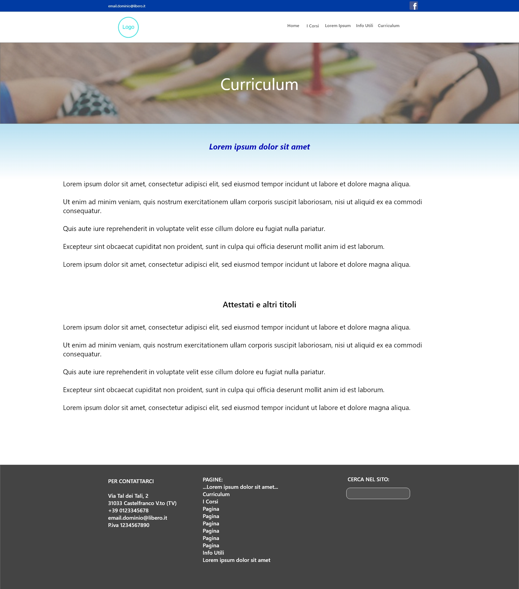
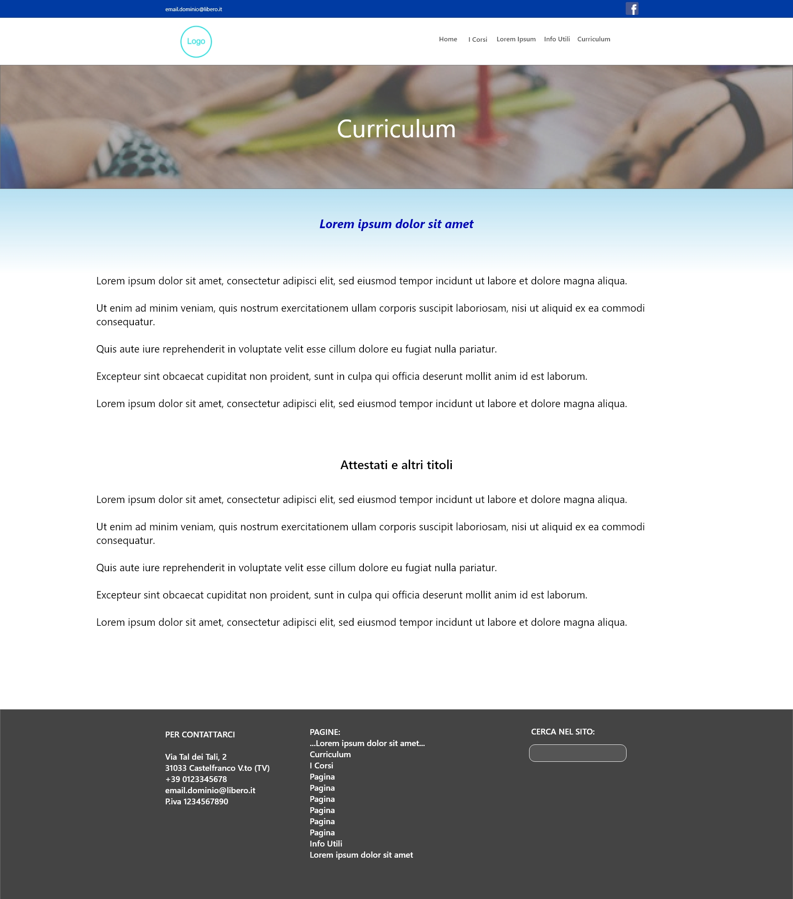

Benessere

Benessere è un progetto personale di mia invenzione. Il tema è una palestra che mostra
servizi e corsi disponibili.
Ho scelto di puntare su una palette di toni chiari e rilassanti, infatti l'azzurro la
fa da padrone.
La struttura è classica: logo in alto a sinistra, menu sulla stessa riga, menu social in
alto a destra; in questo caso non è
stato messo
nessun dropdown menu, puntando su una pagina riepilogativa con la lista dei corsi e al
suo interno le
varie specifiche. In questo caso L'unica pagina visitabile dei corsi è quella dedicata
al fitness.
A questo
link è possibile trovare il design navigabile, realizzato con Adobe XD.
 
